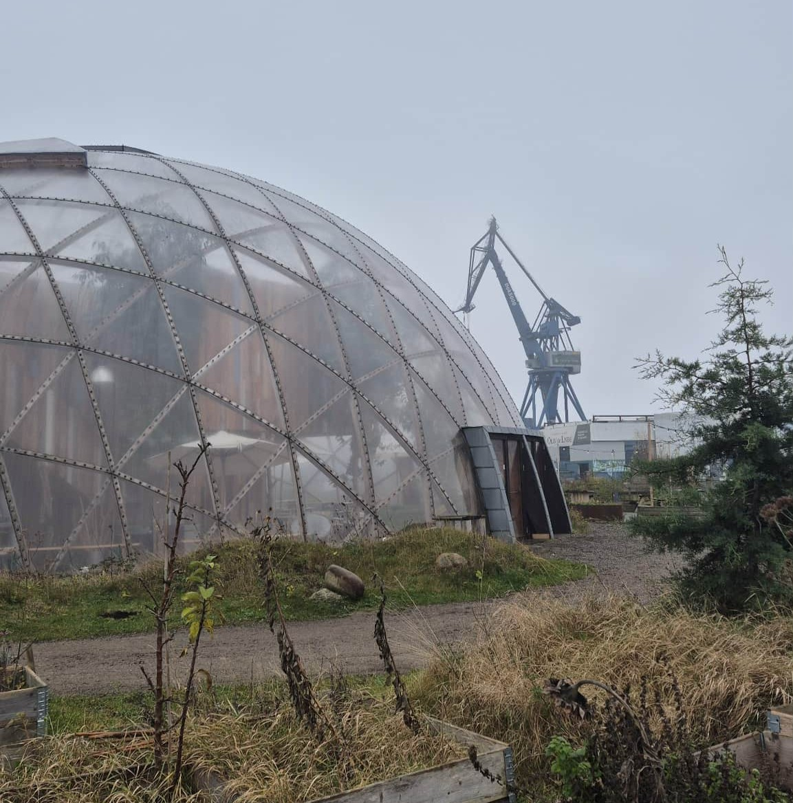
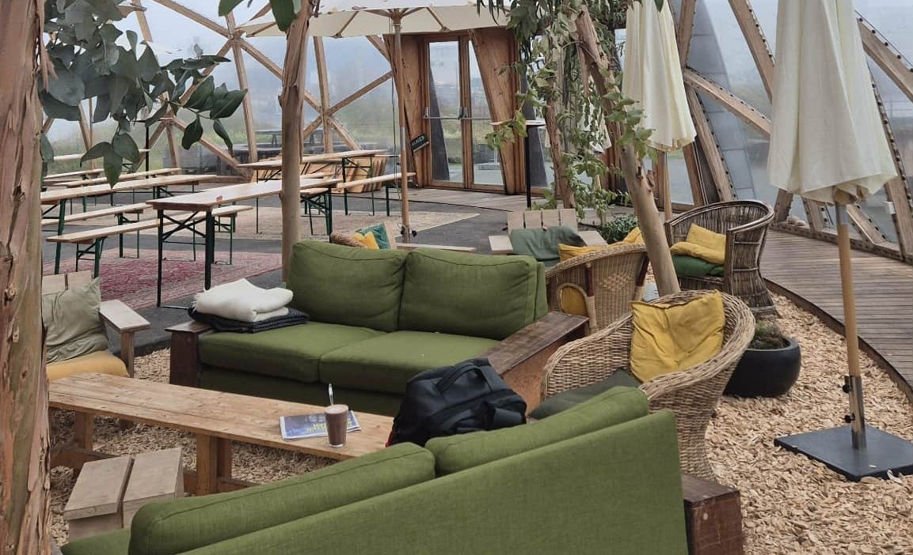
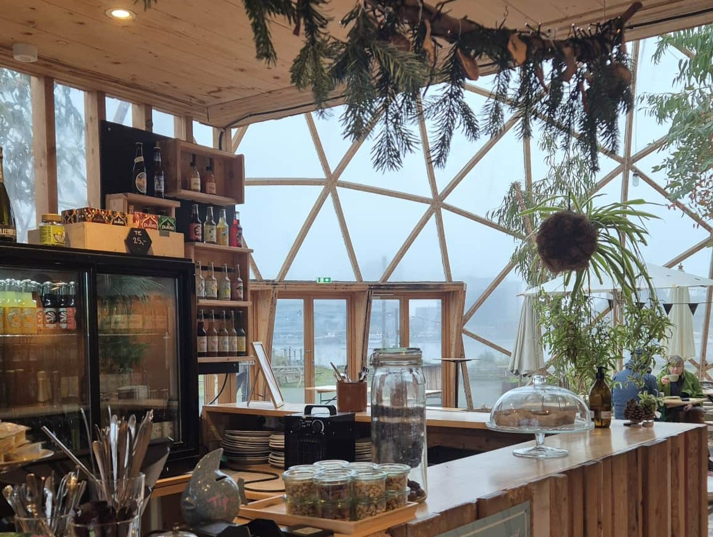
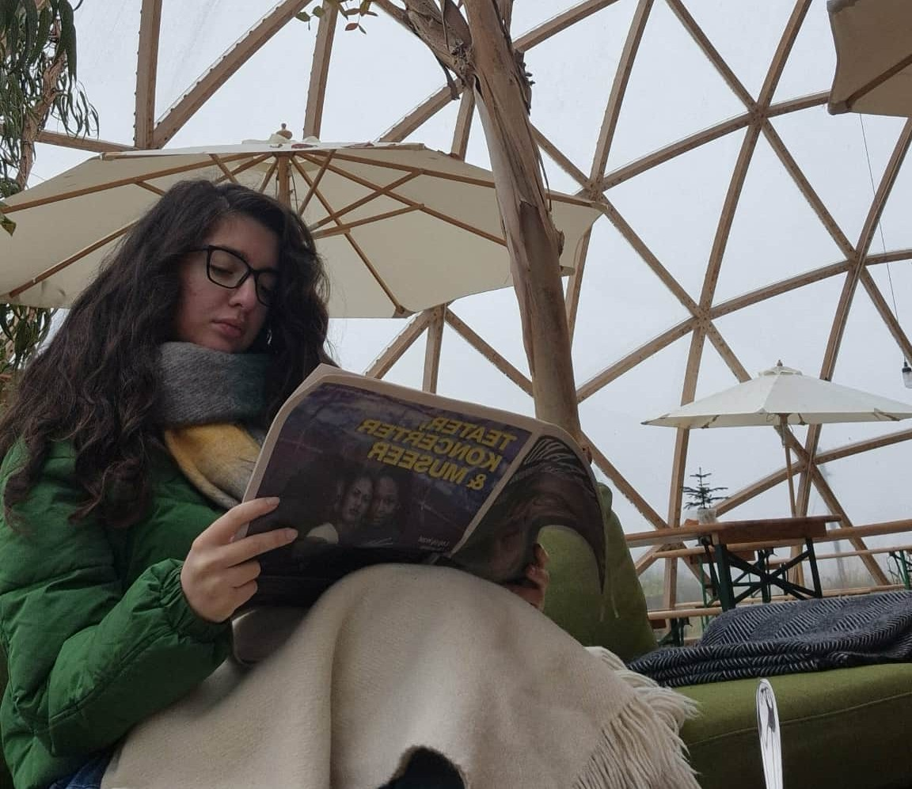
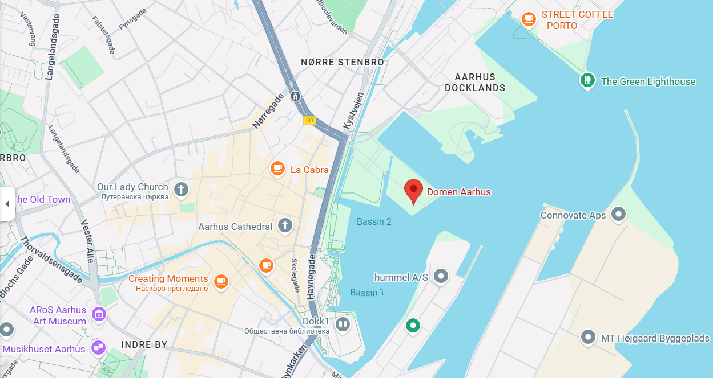

1-2 hours
1-2 hours

 300 - 500 DKK
300 - 500 DKK

Domen Coffee i Århus er en hyggelig, fællesskabsfokuseret café beliggende lige ved havnen i en unik trækuppel.

Besøgende kommer ofte for at nyde en varm drink, studere, møde venner eller blot nyde udsigten over vandet, mens de sidder inde i kuplens beroligende rum.

Det er kendt for sin afslappede atmosfære, bæredygtige koncept og smukke naturlige lysindfald. Priserne er ret overkommelige, og de fleste kaffer koster omkring 30-40 DKK.

Arrangementer på Domen – såsom foredrag, workshops eller små koncerter – varer normalt 1 til 2 timer.
